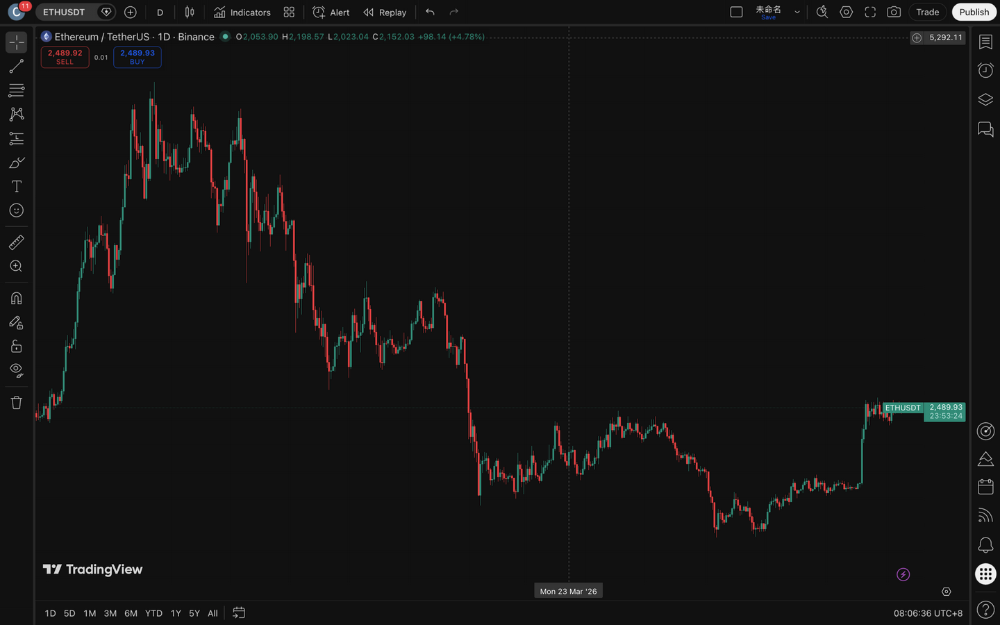
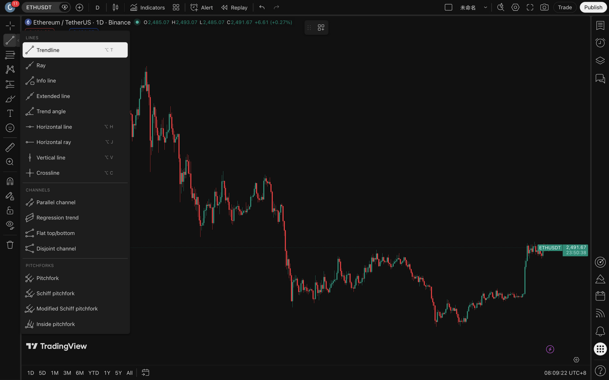
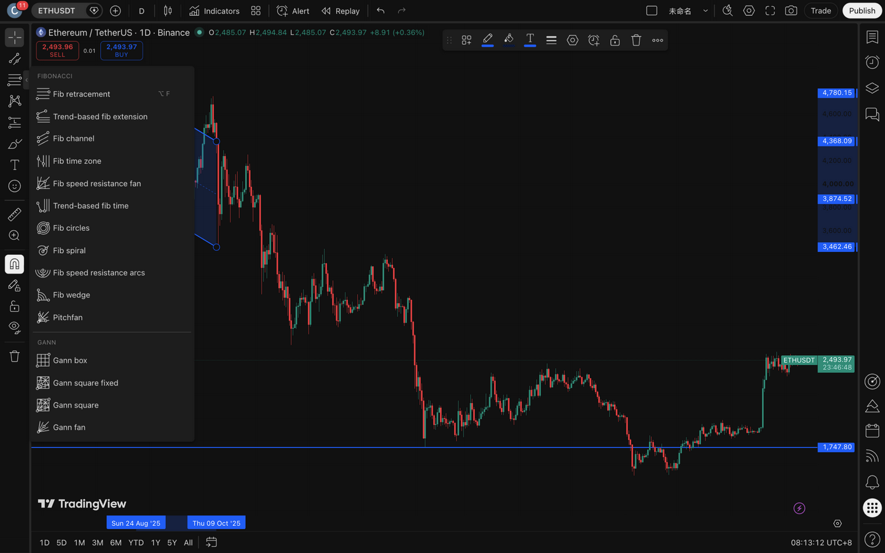
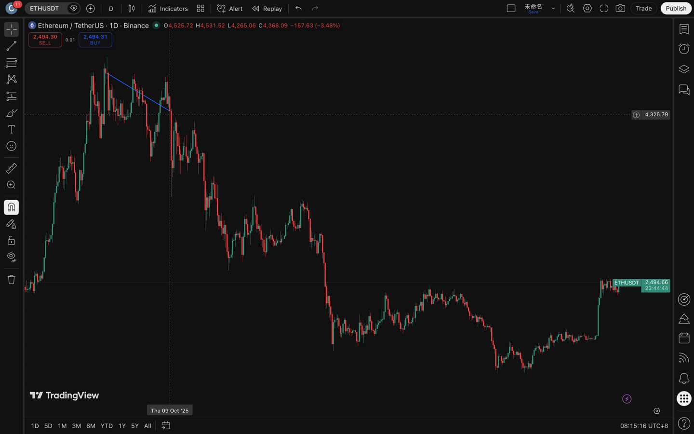
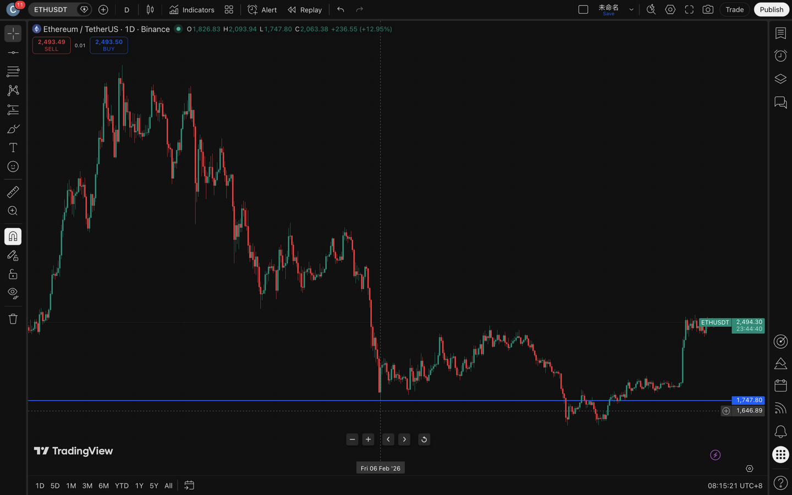
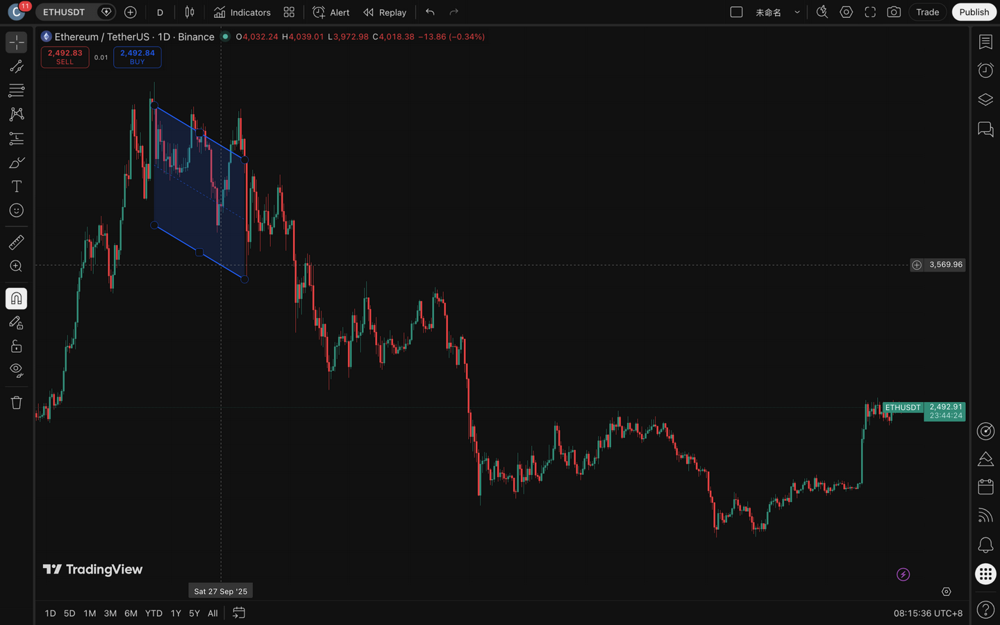
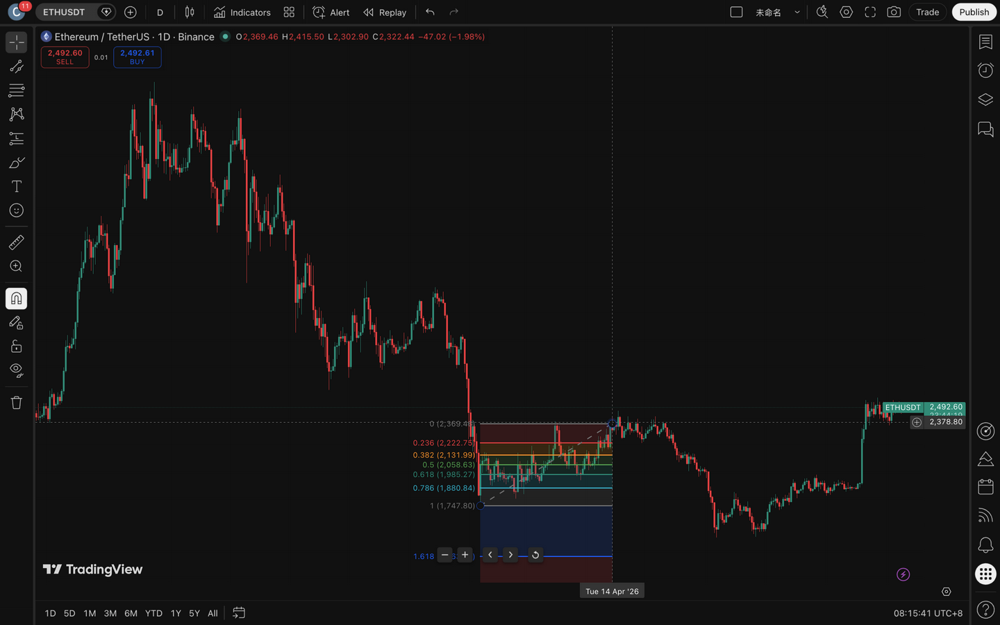
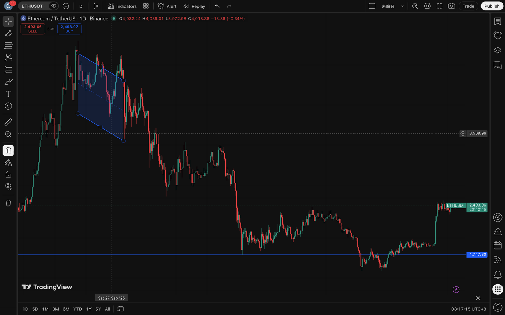
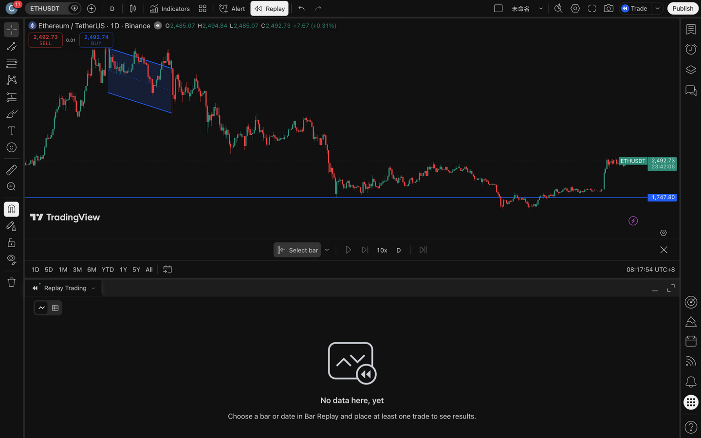
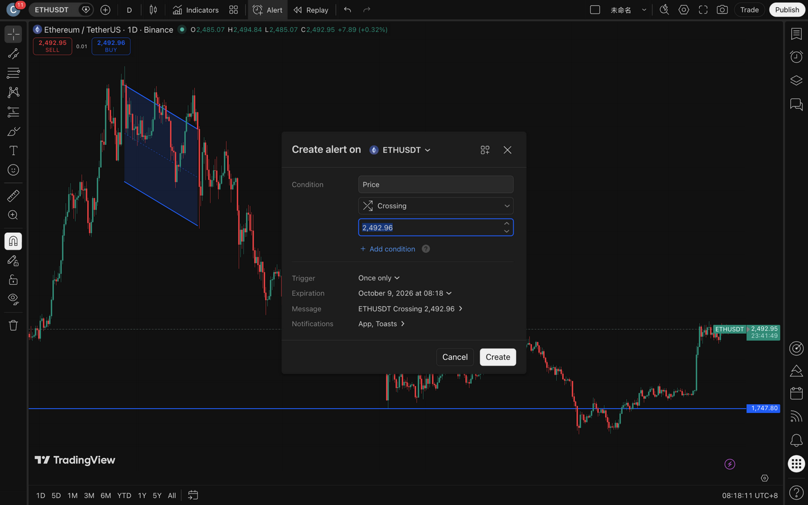

01界面分区：先认清六块

全界面（ETHUSDT · 日线 · 裸K）。
- 左侧竖条＝画线工具栏（本页主角）。
- 顶部横条＝品种、周期、图表类型、指标、警报、回放。
- 图内左上角＝品种信息行——十字光标指着哪根K线，这行就实时显示那根的 O/H/L/C 与涨跌幅（读图时先盯这里）。
- 中央＝主图区，虚线十字是光标，右缘价格轴上的小圆点是光标当前价。
- 右侧竖条＝观察列表/警报等面板（可整体收起）。
- 底部＝周期快捷条（1D 5D 1M…）与时钟（UTC+8）。
建议：初学把右侧面板收起（点右缘图标可再展开），主图越大，读图越省眼。界面语言可在账户设置里切换为中文；本页保留英文原版截图，所有按钮都给出中文对照。
02画线工具栏：组与展开
左侧工具栏的每个图标大多是一个组——点图标本身选「上次用的那个工具」，点图标右侧的小箭头展开整组菜单。找工具不用背位置，展开看一遍就记住。

第 2 组「线」的展开菜单：LINES（趋势线 ⌥T / 射线 / 信息线 / 延伸线 / 趋势角度 / 水平线 ⌥H / 水平射线 ⌥J / 垂直线 ⌥V / 十字线 ⌥C）＋ CHANNELS（平行通道 / 回归带 / 平顶平底 / 非平行通道）＋ PITCHFORKS（叉线组，本课程不教）。⌥ 是 macOS 的 Option 键，Windows 下即 Alt。

第 3 组「斐波那契与甘氏」的展开菜单：FIBONACCI（Fib retracement 回撤 ⌥F / 基于趋势的扩展 / 斐波那契通道 / 时间区间 / 扇形 / 圆环 / 螺旋……）＋ GANN（甘氏盒/方/扇）。本课程只教 Fib retracement 回撤一样（1011§4）；甘氏（GANN）线明确不教（立场见 1011 课）。
光标组（第 1 个图标）
Cross / Dot / Arrow / Eraser——十字是默认；橡皮可点选擦除单条线。
磁铁（Magnet，第 7 个图标）
画线前先打开它：锚点自动吸附到最近的 K 线 O/H/L/C，趋势线端点才会精确落在摆动高低点上。开启时会弹出蓝色提示条。
锁定 / 隐藏（第 8–9 个图标）
锁定＝防误拖全部画线；隐藏＝暂时藏起来看裸图。复盘完记得解除。
垃圾桶（最下）
点开是菜单：Remove N drawings（清除全部画线）/ 指标 / 两者。不是直接清空，防手滑。
03画线通用流程（四种线全一样）
- 开磁铁（第 7 个图标，看到蓝色提示条即成功）。
- 选工具：点组箭头 → 点菜单里的工具名（或直接按快捷键）。
- 点第 1 个锚点：鼠标靠近 K 线高低点时会自动吸附。
- 点第 2 个锚点（通道类还要第 3 点定宽度）——线自动落定。
- 按 Esc 退出工具（否则点图会接着画新的）；选中已画的线会浮出小工具条：颜色 / 线宽 / 设置 / 克隆 / 锁定 / 删除。
两个习惯（1011 课）：
- 画线前想清楚这条线连接的是哪两个极值点、为什么——工具 3 秒，判断 3 个月。
- 画错就删，破位的趋势线不删——它变平后是下一阶段的参照（1011 带读二）。
04趋势线 Trendline（⌥T）

实测：下降趋势线。开磁铁 → 选 Trendline → 第 1 点点在 8 月大顶的高点（自动吸附）→ 第 2 点点在 10 月的更低高点 → 线落定。顶部同时浮出这条线的工具条（颜色/线宽/设置/克隆/锁定/删除）。画法要领（Brooks《Trends》Ch.13–14）：下降连高点、上升连低点；两次触碰只是"候选"，第 3 次触碰被拒绝才成立；本例采用外延画法，锚点用已知影线极值；1011另有内切画法。
常见错误：
- 为了让线"好看"穿过 K 线实体——外延线按极值连接；内切线可按多数棒身拟合。先声明所用画法，不为贴合结果事后切换。
- 一破就删——破位后把它留着，它就是斜率衰减的证据（1011 带读二：16.8 → 10 → 6.4 逐条变平）。
- 用十字光标没开磁铁硬点——端点悬在半空，触点统计全错。
05水平线 / 水平区域（⌥H）

实测：水平支撑线。⌥H → 在 4 月大底的低点区点一下（磁铁吸附到那根K线的最低价）→ 一条横线贯穿全图，右缘自动挂价格标签（本例 1,747.80）。底部中间的小工具条（− ＋ ‹ › ↺）是画线工具激活时的快捷条，Esc 后消失。
和课程的接口（0003 课"位置 > 形态"）：一条线是区域的中轴。认真做法是画 2–3 条（区域上沿 / 下沿）或用矩形工具框出区域；价格刺入但收回来是假突破素材（0003 假突破三纪律），收在线外才是破位。区域被多次测试消耗后才删线，换新参照。
06平行通道 Parallel channel

实测：下降通道。第 2 组箭头 → CHANNELS → Parallel channel，三个点击：
- 起点（8 月顶）。
- 终点（10 月更低高点）。
- 宽度（往下方低点带一按）——两轨平行 + 半透明填充自动生成。
要领（Brooks Ch.15 通道章）：先有趋势线（上轨），再"平行复制"出通道线（下轨）；通道线是磁铁（1008 清单）——过冲与提前回落都是反转线索（1011§3：通道过冲）。
小技巧：通道选中后的小工具条与 Settings 里可改颜色、填充与线型；本例的上轨与 04 节的趋势线是同一条——通道上轨本来就是趋势线，下轨只是它的平行复制。这就是为什么 08 节的全景图里"趋势线"看起来消失在通道上：它俩重合了。
07斐波那契回撤 Fib retracement（⌥F）

实测：4 月低点 → 6 月反弹高点的回撤。⌥F → 第 1 点点在腿的起点（低点）→ 第 2 点点在腿的终点（高点）→ 各档自动标出：0.236 / 0.382 / 0.5 / 0.618 / 0.786 / 1，每档右侧带实时价格，网格只铺满两锚点之间；下方 1.618 扩展档默认也在（量度目标素材）。清醒用法（1011§4）：38.2 / 50 / 61.8 三档是回撤观察区，不是买卖指令——与水平位、趋势线重合时才有分量（本例 0.236≈2,222.75 恰压在前高区）。
08全景：一张图就是一张"地图"

实测全景：通道（上轨＝趋势线，下轨平行）＋ 水平支撑（1,747.80，磁铁位）。复盘 2.0 模板 B 组「地图组」要求的正是这三样：关键区域、磁铁位、结构线——画在图上，不写在表里。斐波那契按需叠加（档位太多会糊，只留 38.2/50/61.8 一档的垃圾信息更少——Settings 里可关）。
09Bar Replay 回放：画线能力的训练场

实测：回放模式。点顶部 Replay → 底部出现控制条：|◄ Select bar（选回放起点，点图上某根K线即从那里开始"切掉未来"）、▶ 播放、▶| 逐根步进、10x 倍速、D 周期，最右 ✕ 退出。下方的 Replay Trading 面板是模拟下单用的，纯画线训练可无视（右上 − 收起）。
- 点 Replay → 选起点（比如 60 根之前）——未来数据被切掉。
- 逐根步进，每根做三问：谁赢了？战场在哪？干净吗（0007/1010 协议）。
- 在关键位置动手画线：趋势线、水平区、通道——画完再步进，让市场给你判卷。
- 错的地方记进复盘模板的事件日志（哪一步看错了、正确响应是什么）。
纪律（1010 课）：回放里最忌"瞥见未来"——把右边遮住，步进前先写下判断再揭晓。画线能力只能在回放里长出来：实盘划线是验收，回放划线才是练习。
10警报 Alert：让磁铁位来叫你

实测：创建警报。点顶部 Alert（闹钟图标）→ 弹窗：Condition（条件：Price 价格 / Crossing 上穿/下穿 / 目标价——默认填当前价 2,492.96）、Trigger（Once only 只触发一次…）、Expiration（到期日）、Notifications（App / Toasts 通知方式）→ Create。到价时右下角弹提醒。
和课程的接口（1008 磁铁清单）：把警报挂在磁铁位——量度目标、通道线、fib 档、前极值、整数关——到价提醒代替盯盘。两条纪律：
- 警报响了回到图前先做三问，不要在通知弹窗里做决定。
- 只挂计划内的位置（复盘模板 E 组的预案），警报不是猎枪是门铃。
11快捷键速查（本页截图实测出现过的）
| 键 | 工具 | 备注 |
|---|
| ⌥T | 趋势线 Trendline | macOS ⌥＝Option；Windows＝Alt |
| ⌥H | 水平线 Horizontal line | 一下一点，贯穿全图 |
| ⌥J | 水平射线 Horizontal ray | 向右单向 |
| ⌥V | 垂直线 Vertical line | 标日期/事件用 |
| ⌥C | 十字线 Crossline | 横竖双线十字 |
| ⌥F | 斐波那契回撤 Fib retracement | 两点选腿 |
| Esc | 退出当前画线工具 | 画完一条先 Esc，再画下一种 |
收尾三步：
- 选中不想要的线按 Delete。
- 垃圾桶 → Remove all drawings 一键清场。
- 所有画线随图表布局自动云端保存，换设备登录还在。